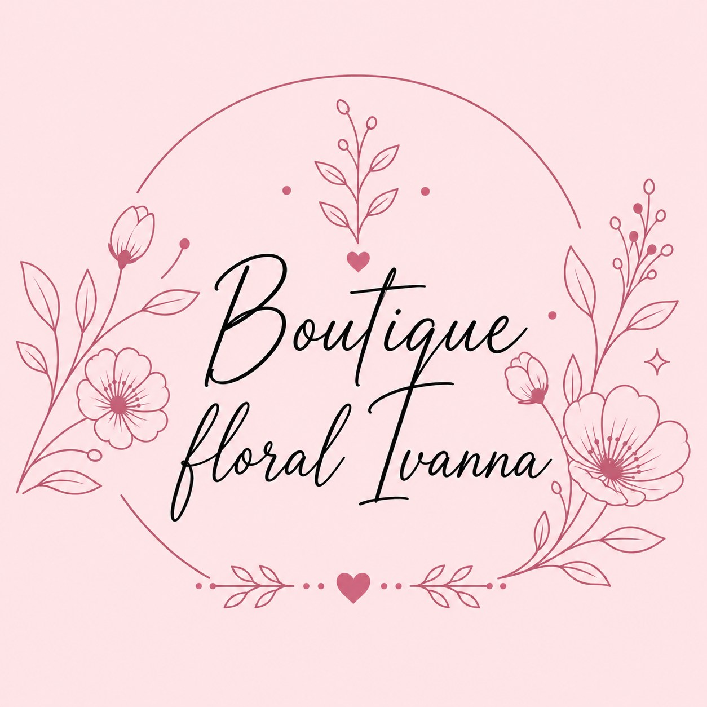
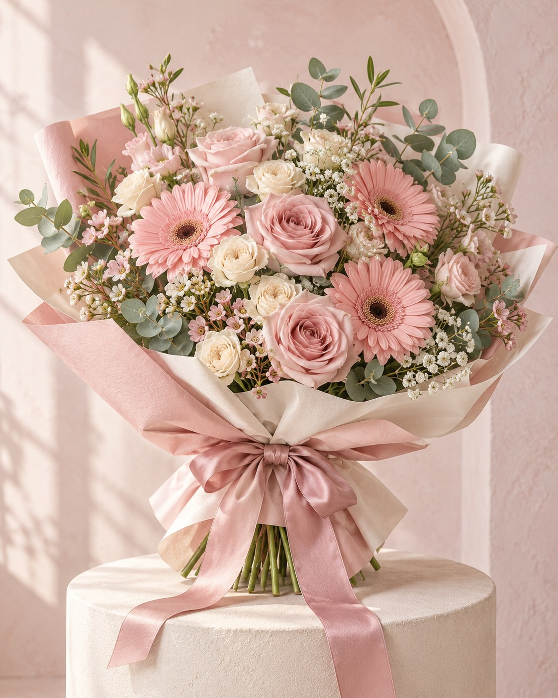
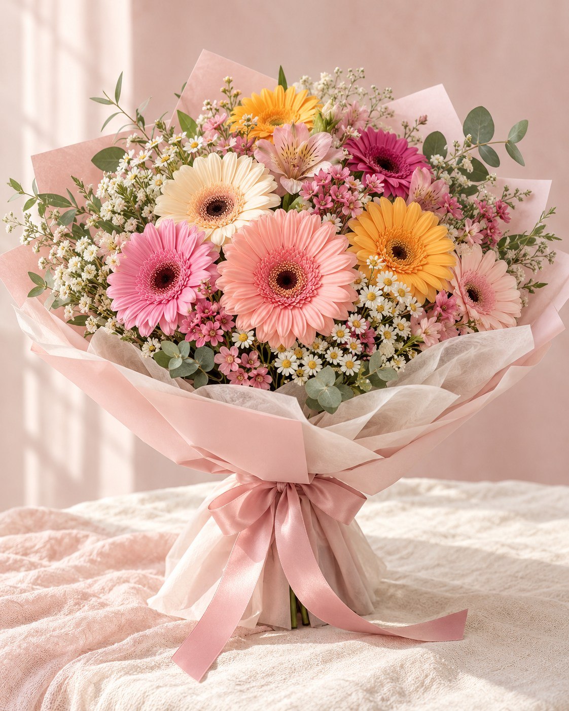

Encuentra tu inspiración.
Un estilo suave, algo lleno de color o un gesto romántico. Guarda lo que te guste.

IvannaBOUTIQUE FLORALUn detalle bonito♡ FLORES, DETALLES Y MUCHO AMOR
Hay cosas que se dicen mejor con flores.
Encuentra la inspiración para ese alguien especial.

Imagen de inspiración para esta propuesta.
TODOS LOS SENTIMIENTOS MERECEN FLORES
No hace falta esperar una fecha especial.
Pero si la hay, también florecemos contigo.
PEQUEÑOS FLECHAZOS FLORALES
Guarda lo que te enamore y cuéntanos cómo lo imaginas.
Preparando las inspiraciones…
Ideas para inspirarte. Las imágenes son parte de esta propuesta visual; el diseño, las flores disponibles y el precio de tu detalle se acuerdan directamente con la boutique.
un poquito de rosa,
muchísimo cariño.
EL UNIVERSO IVANNA
Una boutique floral en Residencial Poniente, Zapopan, para darle forma a ese detalle que tienes en mente.
Elige una inspiración, piensa en esa persona y comparte tus preferencias. Lo bonito empieza con una conversación.
Vamos a imaginarloASÍ FLORECE TU DETALLE
Un estilo suave, algo lleno de color o un gesto romántico. Guarda lo que te guste.
Elige la ocasión y tus tonos favoritos. Prepara esa dedicatoria que lo hace especial.
Consulta el diseño, precio, disponibilidad y la forma de recibirlo antes de confirmar.
TÚ PONES EL SENTIMIENTO
Arma una idea para tu detalle y mira cómo se vería tu dedicatoria.
Después, llévala a una conversación por WhatsApp.
ANTES DE ESE DETALLE BONITO
Prepara tus preferencias de estilo, tonos y dedicatoria en el formulario. Compártelas por WhatsApp para que la boutique confirme cómo darles forma según las flores disponibles.
Las imágenes de esta propuesta son referencias de inspiración. El diseño final, las flores y los colores deben acordarse con la boutique antes de confirmar tu pedido.
Envía tu idea por WhatsApp. Puedes incluir un presupuesto aproximado para orientar la conversación. La boutique confirma el precio del diseño; las opciones de presupuesto no son precios publicados.
Puedes consultar si existe cobertura en tu colonia desde el formulario. La disponibilidad, el costo y los tiempos de entrega se confirman directamente por WhatsApp.
El formulario prepara un mensaje con tus preferencias. Tú lo envías en WhatsApp y la boutique confirma contigo diseño, precio, fecha y forma de entrega antes de cerrar el pedido.
UN RINCONCITO FLORAL EN ZAPOPAN

Que nunca te falten
motivos para florecer.
A veces, un ramo lo dice todo.
¿A quién le vas